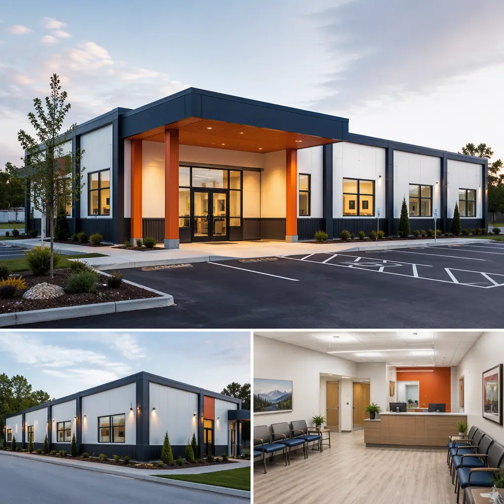
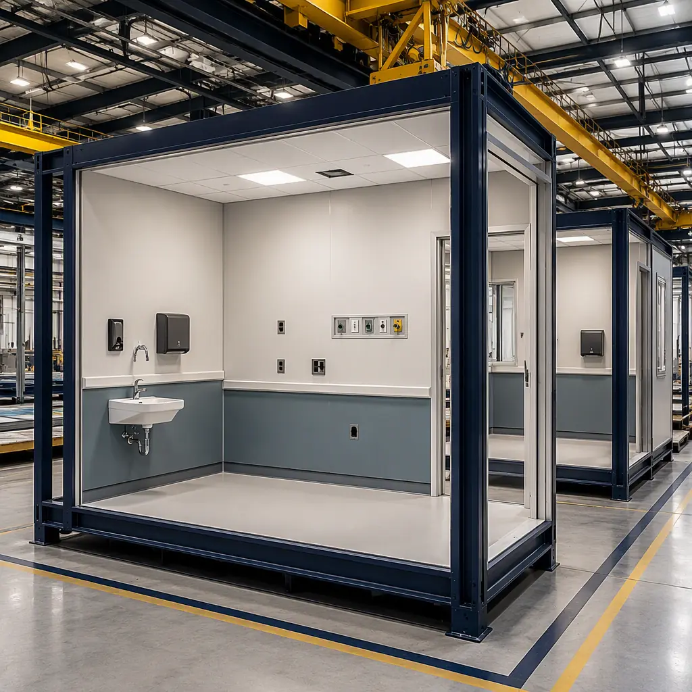
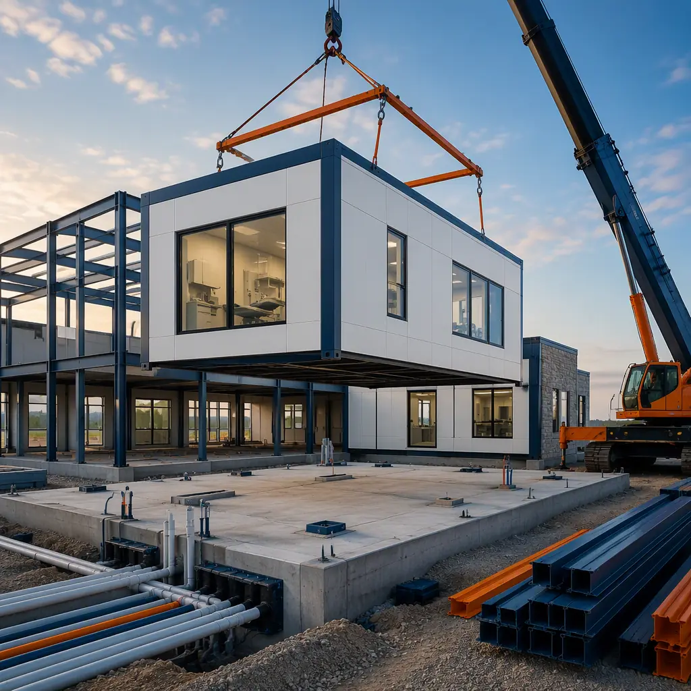
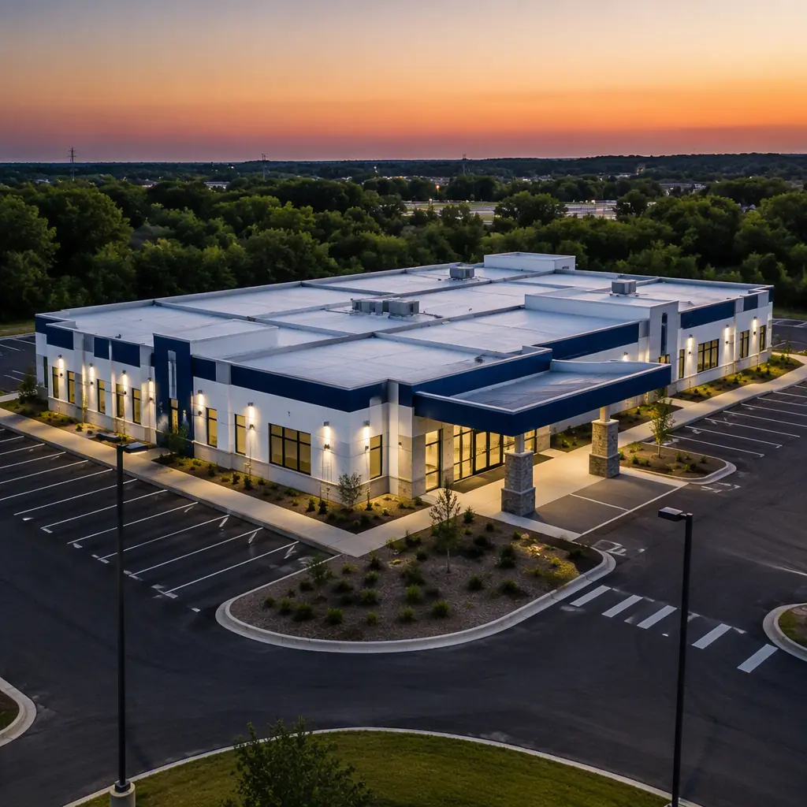

Urgent care is the fastest-growing segment of ambulatory healthcare real estate in the United States. The industry has grown from roughly 6,000 centers in 2013 to more than 14,000 today, handling an estimated 160–180 million patient visits per year. Private equity-backed operators and hospital systems are both expanding aggressively — and every new center faces the same constraint: the 9–14 month conventional construction timeline that delays revenue by nearly a year. Modular construction compresses that timeline to 20–26 weeks from design freeze to certificate of occupancy, because 80–90% of the building — including exam rooms, medical gas systems, x-ray shielding, and finishes — is built indoors while site work proceeds in parallel. This guide explains the urgent care building program, how factory-built medical modules satisfy clinical and regulatory requirements, and what a walk-in clinic developer should expect from modular delivery.

Why Urgent Care Is the Most Modular-Ready Healthcare Sector
Urgent care centers are, structurally, one of the most repetitive building types in healthcare. A typical center contains a predictable program: 6–12 exam rooms, 2–3 treatment rooms, a procedure room, a lab draw station, an x-ray suite, a nurses' station, a waiting area, and a front desk. The rooms are small, standardized, and MEP-intensive — exactly the conditions under which factory production outperforms site labor. Compare this with a hospital bed tower, where 50 different room types and complex vertical circulation make modularization harder. Urgent care is closer to hospitality in its repetition: a center is effectively a kit of standardized medical modules.
This repetition produces a second advantage: prototype-based learning. When an operator builds its 10th modular urgent care center, the design is proven, the permit package is repeatable, and the factory production line is tuned. Operators like MedExpress, CityMD, and GoHealth have all used prefabricated and modular delivery for rapid market entry, and national health systems are now standardizing on factory-built clinics for their retail healthcare portfolios. For a deeper look at how factory-built medical buildings compare across the care continuum, see our modular healthcare construction overview.
The Urgent Care Building Program: What a Walk-In Clinic Actually Needs
Before design begins, the building program must be locked. A 4,500–6,000 sq ft single-story center is the industry sweet spot: large enough for 8–10 exam rooms and a full x-ray suite, small enough to keep site acquisition and operating costs manageable. The program breaks down as follows:
- Patient care zones (55–65% of gross area). Exam rooms at 90–120 sq ft each, treatment rooms at 150–200 sq ft, a procedure room with a minor-surgery capable layout, and a nurses' station with medication storage.
- Diagnostic zone (10–15%). X-ray suite with lead-lined walls (typically 1.6 mm lead equivalent for the walls, 2.0 mm for the control window), a lab draw station with CLIA-waived testing capacity, and an EKG/point-of-care testing alcove.
- Front-of-house (15–20%). Reception and check-in, a waiting area sized for 12–20 seats with line-of-sight to the front desk, and family restrooms.
- Support zone (10–15%). Staff break room, storage, janitorial closet, and an IT/server alcove for the EHR system.
Each zone maps cleanly onto factory-built modules. Exam rooms arrive as finished modules with wall protection, hand-wash sinks, exam tables, and medical gas outlets pre-installed and pressure-tested in the factory. For operators developing multiple sites, our modular medical clinic guide covers the broader outpatient program family, including surgery centers and dental suites.
Exam Room Modules: Factory Precision Where It Matters Most
The exam room is the clinical heart of an urgent care center, and it is where modular construction's quality advantages are most visible. In a factory setting, exam room modules are assembled on production jigs with dimensional tolerance of ±2 mm, then finished in a climate-controlled environment at 18–25°C with controlled humidity. Wall protection, impact-resistant corners, and continuous impervious flooring are installed under QA inspection rather than in a crowded site trailer environment.
Medical gas and vacuum systems are the critical differentiator. Each exam room module receives factory-installed medical air, medical vacuum, and — where the program requires it — oxygen outlet provisions, run in hard-drawn copper tubing per NFPA 99 Chapter 5. The factory performs brazed joint verification, pressure testing at 1.5 times operating pressure, and purge-and-certify documentation before the module ships. On a conventional site, medical gas installation is one of the most schedule-sensitive and inspection-heavy trades, often causing multi-week delays. In the factory, it is a controlled production step with a documented test record for every joint. For the quality system behind this documentation, our factory quality control guide details the inspection framework used on all MODURA medical projects.

X-Ray Suites and Shielding in Factory-Built Centers
Radiology is often assumed to be the dealbreaker for modular medical buildings. In practice, it is a solved problem. X-ray shielding is installed in the factory in one of two ways: lead-lined drywall panels (1.6–2.0 mm lead equivalent per the radiology physicist's report) or, increasingly, high-density barium sulfate board that eliminates lead handling on site. The shielding is installed as part of the module wall assembly, with joints staggered and sealed under factory QA, then verified with a radiation survey by a licensed medical physicist after installation — the same verification process used on conventionally built suites.
The x-ray equipment itself is site-installed after the module is set, which is standard practice regardless of construction method. The module provides the shielded room envelope, the structural support for ceiling-mounted equipment rails, and the 12–16 inch thick concrete equipment pad integrated into the module floor where required. Because the shielded room is factory-built, the radiology room layout can be commissioned and verified before the building arrives on site, eliminating the most common cause of schedule overruns in imaging suite construction. For facilities adding imaging to an existing campus, our diagnostic imaging center guide covers MRI, CT, and x-ray suites in detail.
Compliance: Building Ambulatory Care Facilities to Code
Urgent care centers are classified as ambulatory care occupancies under the IBC when they provide treatment for patients who are rendered incapable of self-preservation. This classification triggers specific requirements that modular construction handles well:
| Requirement | Typical Standard | How Modular Delivers It |
|---|---|---|
| Medical gas systems | NFPA 99 Chapter 5 | Factory-installed copper piping, pressure-tested and certified per module |
| Fire resistance | IBC ambulatory care, 1-hour or 2-hour | Factory-installed fire-rated assemblies with documented test certification |
| Accessibility | ADA / ICC A117.1 | Accessible exam rooms and path of travel designed into module layout |
| Ventilation / infection control | ASHRAE 170, 6+ ACH exam rooms | Factory-installed ERV and ductwork, tested and balanced pre-shipment |
| X-ray shielding | Radiology physicist report | Lead-equivalent panels factory-installed, field survey after set |
| CLIA lab area | CLIA waiver requirements | Lab draw station with dedicated plumbing and ventilation in module |
Because every module ships with its compliance documentation — material certifications, weld inspection reports, pressure test certificates, fire assembly listings — the local authority having jurisdiction receives a complete submittal package at inspection time. This documentation advantage is covered in depth in our permitting and zoning guide, which explains how factory-built projects typically clear plan review faster than site-built equivalents.
The 20-Week Timeline: From Design Freeze to Open Doors
Speed is the economic engine of urgent care construction. A center that opens 6 months earlier collects 6 months of revenue — typically $900,000–$1.8 million for a center generating $150,000–$300,000 per month — and captures market share in a trade area where the first mover often wins the commercial insurance contracts. The modular timeline:
- Weeks 0–4: Design and engineering. Building program confirmation, module layout, MEP coordination in BIM, permit drawings. Factory production slots reserved.
- Weeks 4–6: Site work begins in parallel. Foundation (pier and grade beam or slab-on-grade), utilities, and parking are constructed while modules are still in production.
- Weeks 6–16: Factory production. Modules are fabricated, finished, and QA-inspected indoors. Medical gas certified, x-ray shielding installed, ERV and HVAC tested.
- Weeks 16–18: Module delivery and set. Modules are transported and craned onto the foundation; a 4,500–6,000 sq ft center typically sets in 2–4 days.
- Weeks 18–20: MEP tie-in and commissioning. Inter-module connections, utility tie-ins, medical gas verification, x-ray survey, and certificate of occupancy.
Compare this with conventional delivery, where the 12–14 month timeline is driven by sequential site trades: foundations, then structural, then MEP rough-in, then finishes, each waiting on the last. For a full comparison of factory-built versus traditional project schedules, see our modular construction project timeline analysis.
Because module production is unaffected by weather, the schedule holds even when site conditions deteriorate. A winter foundation pour can slip a week without moving the opening date — the factory continues producing modules that would otherwise be blocked by frozen ground or rain. This schedule certainty is contractually meaningful: modular urgent care projects are consistently delivered within 2–3 weeks of the committed date, while conventional healthcare projects routinely exceed their schedules by 10–20%.

Cost Per Square Foot: Where the Modular Center Saves Money
For a 5,000 sq ft urgent care center, modular delivery typically lands at $190–260 per sq ft for the building shell and core systems, compared with $240–340 per sq ft for conventional construction of equivalent medical finishes. The gap comes from three sources: compressed schedule (8–10 months less carrying cost on construction financing), reduced site labor (fewer trades, shorter exposure to labor shortages), and factory procurement (bulk material purchasing and minimal waste). The medical fit-out — x-ray equipment, exam furniture, EHR infrastructure — is identical either way and should be budgeted separately at $90–150 per sq ft.
The more significant number is the revenue impact. An urgent care center that opens in 5–6 months instead of 12–14 months delivers first-year revenue 6–8 months earlier, which on a $150,000–$300,000 monthly revenue center represents a $900,000–$2.4 million swing in cumulative cash flow. When this revenue acceleration is added to construction savings, the effective payback period for choosing modular delivery is typically measured in months. Our developer ROI analysis provides the full financial model for healthcare and other revenue-generating building types, and our cost per square foot guide benchmarks modular pricing across building categories.
Scaling From One Center to a Regional Network
The economics of modular urgent care improve with scale. A single modular center saves perhaps 15–25% on construction cost and 6–8 months of schedule. A regional operator building 10–20 centers per year achieves something more valuable: a repeatable product. The design is refined once, the permit package is standardized across municipalities, the factory production line is tuned to the operator's module types, and construction risk becomes a managed production variable rather than a site-by-site gamble. Operators pursuing this model typically lock factory production capacity with a master agreement and release modules against site readiness — the same franchise-rollout playbook used by QSR and retail chains, which we document in our franchise rollout guide.
Urgent care is a volume business with a real estate bottleneck. The center that opens in 20 weeks instead of 60 weeks doesn't just save construction costs — it captures the trade area's insurance contracts, its staffing pipeline, and its patient habits before a competitor can build. In urgent care, the building is the competitive weapon, and speed is its ammunition.
For operators expanding into underserved or rural trade areas, where site-built construction labor is scarce and conventional bids come in high, modular delivery is frequently the only economically viable path — a pattern we examine in our community health center guide for FQHCs and rural clinics.
